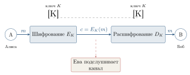
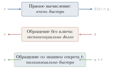

Шифрование: от тайнописи к математической задаче
Зачем людям шифры
Каждый из вас, заходя на любой сайт по адресу, начинающемуся с https://, доверяет ему шифрование. Браузер и сервер обмениваются миллионами сообщений, но никто посторонний прочесть их не может. В этом параграфе мы поймём, какие задачи решает шифрование, какие общие схемы существуют и почему именно теория чисел оказалась его математической основой.
Античность. Первые шифры были чисто механическими. В Древней Греции (V век до н. э.) воины Спарты использовали скиталу — цилиндр определённого диаметра, на который наматывалась лента с текстом. Без точно такой же палочки прочесть сообщение было нельзя. Юлий Цезарь, по свидетельству Светония, в переписке со своими полководцами сдвигал каждую букву алфавита на три позиции: A → D, B → E, и так далее. Этот шифр Цезаря — простейший шифр замены (рис. 4.5).

Любой такой шифр легко взламывается: букв в алфавите немного, и можно просто перебрать все 25 возможных сдвигов. Более изобретательные шифры (например, шифр Виженера XVI века) использовали переменный сдвиг, заданный ключевым словом. Они продержались несколько столетий, пока в середине XIX века Чарлз Бэббидж и независимо Фридрих Касиски не предложили универсальный метод их взлома.
XX век: машины. Во время Второй мировой войны на сцену вышли электромеханические шифровальные машины — знаменитая немецкая Энигма, японская «Пурпурная» (Purple), советская «Фиалка». Их взлом стал отдельной героической страницей: в Великобритании Алан Тьюринг возглавлял проект Bletchley Park, где была сконструирована машина «Бомба», взламывавшая Энигму. Считается, что этот успех сократил войну в Европе на 2–4 года.
Деятельность Алана Тьюринга и его коллег была настолько секретной, что заслуги команды Bletchley Park были рассекречены только в 1970-х годах — то есть через 25 лет после конца войны. Сам Тьюринг при жизни так и не узнал о признании. Тьюринг также считается одним из отцов теоретической информатики — именно его именем названа престижная Премия Тьюринга, аналог «Нобелевской премии в информатике».
Общая схема симметричного шифрования
Все шифры до 1970-х годов имели одну общую особенность: для шифрования и расшифрования использовался один и тот же ключ. Такие шифры называются симметричными (или secret-key) (рис. 4.6).

Симметричные шифры быстры и до сих пор широко применяются (например, стандарт AES — то, чем шифруется содержимое любого Telegram-сообщения после установки соединения). Но у них есть фундаментальная проблема распределения ключей: как Алисе и Бобу договориться о ключе, если они никогда раньше не встречались, а связь между ними прослушивается?
Парадокс симметричного шифрования. Чтобы безопасно обмениваться сообщениями, нужен общий ключ. Чтобы безопасно передать ключ — нужен другой общий ключ. И так до бесконечности.
В большом мире (миллиарды пользователей интернета) задача распределения ключей становится непреодолимой: каждой паре нужен свой ключ, всего \binom{n}{2} \approx n^2/2 ключей.
Революция 1976 года: открытый ключ
В 1976 году произошёл прорыв, перевернувший всю криптографию. Уитфилд Диффи и Мартин Хеллман предложили принципиально новую идею: асимметричное шифрование, или криптография с открытым ключом.
Каждый пользователь имеет пару ключей:
открытый ключ (public key) — его можно (и нужно) сообщать всем: публиковать на сайте, отправлять незашифрованно;
закрытый ключ (private key) — он хранится в строжайшем секрете у владельца.
Ключевое свойство: что зашифровано открытым ключом — расшифровать может только владелец соответствующего закрытого ключа (рис. 4.7).

Заметьте: больше нет проблемы распределения ключей. Алиса не должна заранее ничего секретного передавать Бобу — она просто берёт его открытый ключ из открытого источника.
Односторонние функции и функции с секретом
В чём математическая суть асимметричной криптографии? В существовании односторонних функций.
Односторонняя функция (one-way function) — это функция f \colon X \to Y, обладающая двумя свойствами:
Прямое вычисление просто: зная x, легко (полиномиально быстро) вычислить f(x).
Обращение трудно: зная y = f(x), восстановить x без какой-либо дополнительной информации — задача практически нерешаемая (требует экспоненциального времени).
Хороший бытовой образ: разбить вазу — легко, собрать обратно — очень тяжело. Или: перемешать колоду карт — мгновенная операция, восстановить исходный порядок — немыслимо.
Главные примеры из теории чисел:
Умножение vs. факторизация: перемножить p\cdot q — мгновенно; разложить произведение на простые — трудно. Это база RSA.
Дискретный логарифм: возвести g в степень x по модулю p — быстро; зная g^x \bmod p, восстановить x — очень трудно. Это база схемы Диффи–Хеллмана.
Функции с секретом. Просто односторонней функции для асимметричного шифрования мало: нужно, чтобы у кого-то одного (владельца) была возможность всё-таки обратить функцию — именно для расшифрования сообщений (рис. 4.8).
Функция с секретом (trapdoor function) — односторонняя функция f, для которой существует дополнительная секретная информация t (лазейка, trapdoor), знание которой делает обращение f полиномиально быстрым.

Существование «настоящих» односторонних функций математически не доказано (это связано с одной из главных нерешённых задач — проблемой \mathbf{P}\ne\mathbf{NP}). На практике мы используем функции, для которых обращение считается трудным, потому что человечество за десятилетия так и не научилось делать это быстро.
Можно представить себе сейф с замком: запереть сейф (положить документ внутрь) может каждый, но открыть — только владелец ключа.
Идея использования. Открытый ключ задаёт функцию с секретом f. Кто угодно может вычислить c = f(m) — зашифровать сообщение. Для расшифрования нужно обратить f, что без секрета t — безнадёжно. У владельца секрета t это вычисление быстрое. Тем самым роль закрытого ключа — хранить лазейку t.
Где криптография работает прямо сейчас
Чтобы дальнейший материал не казался академическим упражнением, перечислим, в каких знакомых каждому ситуациях работают (часто прямо сейчас, пока вы это читаете) описанные в этой главе идеи.
Загрузка любого сайта (
https). Браузер договаривается с сервером о ключе через схему Диффи–Хеллмана, после чего весь трафик шифруется симметричным алгоритмом (AES).Мессенджеры (WhatsApp, Telegram, Signal). Используют так называемое сквозное шифрование (end-to-end): сервер мессенджера видит лишь шифр-текст. Согласование ключей — асимметричное.
Банковские карты и оплата. Транзакция от карты проходит через цепочку обмена цифровыми подписями.
Госуслуги и налоговая. Подача декларации сопровождается электронной цифровой подписью (ЭЦП), о которой подробно — в § 4.4.
Цифровой пропуск/QR-код (от билета в кино до подтверждения вакцинации). Содержит подпись эмитента, проверяемую его открытым ключом.
Криптовалюты. Биткойн и его «родственники» — огромная распределённая система с электронными подписями: кошелёк — это просто пара (открытый ключ, закрытый ключ).
Что должно быть у «правильной» криптосистемы. Когда мы строим конкретную схему, надо проверять, что она удовлетворяет следующим естественным требованиям:
Корректность. Если Алиса честно зашифровала открытым ключом Боба, Боб всегда расшифрует — ровно исходное сообщение.
Стойкость. Подслушивающий, видя только шифр-текст и открытый ключ, не может практически восстановить исходное сообщение.
Эффективность. Шифрование и расшифрование выполняются быстро (полиномиально).
Защита ключа. Закрытый ключ не должен «утекать» из открытого — даже зная открытый ключ, нельзя восстановить закрытый.
В следующих параграфах мы построим конкретные схемы — RSA и Диффи–Хеллман — и убедимся, что они этим требованиям удовлетворяют.
Зашифруйте шифром Цезаря со сдвигом 5 слово
INFORMATIKA.Почему симметричное шифрование плохо подходит для миллиарда пользователей? Подсчитайте, сколько ключей надо хранить.
Объясните своими словами, в чём состоит свойство «одностороннести» функции.
* Знаменитая Энигма имела примерно 10^{20} возможных стартовых установок. Хватило бы перебора, если перебирать миллион вариантов в секунду?
Приведите три бытовые операции, которые ведут себя как «односторонние функции».